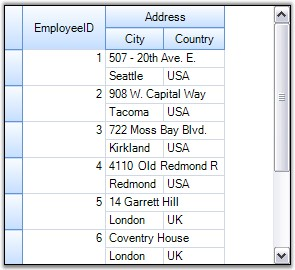
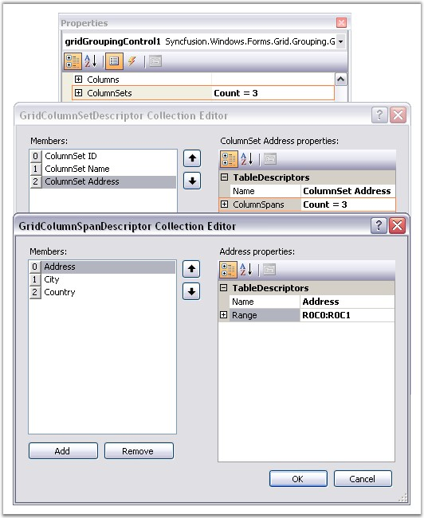

Grid Grouping control offers built-in support for MultiRowRecords. This feature allows the records to span across multiple rows and columns. It is achieved through the property TableDescriptor.ColumnSets. It allows you to modify the default alignment of the visible columns.
The ColumnSets Collection
ColumnSets acts as a superset of TableDescriptor.Columns collection. Once the ColumnSets are defined, the grouping grid will then loop through the collection and organize the data display accordingly. Each ColumnSet is defined by a GridColumnSetDescriptor. ColumnSets are managed by GridColumnSetDescriptorCollection that is returned by the TableDescriptor.ColumnSets property.
Programmatically
Follow the steps below to span the records across multiple rows.
1. Define a GridColumnSpanDescriptor for each column to be spanned across grid rows or columns. Specify the range that the column spans. Rows and Columns are zero-based.
|
[C#]
GridColumnSpanDescriptor csd0 = new GridColumnSpanDescriptor("EmployeeID"); csd0.Range = GridRangeInfo.Cells(0, 0, 1, 0); GridColumnSpanDescriptor csd1 = new GridColumnSpanDescriptor("Address"); csd1.Range = GridRangeInfo.Cells(0, 1, 0, 2); GridColumnSpanDescriptor csd2 = new GridColumnSpanDescriptor("City"); csd2.Range = GridRangeInfo.Cells(1, 1, 1, 1); GridColumnSpanDescriptor csd3 = new GridColumnSpanDescriptor("Country"); csd3.Range = GridRangeInfo.Cells(1, 2, 1, 2); |
|
[VB.NET]
Dim csd0 As GridColumnSpanDescriptor = New GridColumnSpanDescriptor("EmployeeID") csd0.Range = GridRangeInfo.Cells(0, 0, 1, 0) Dim csd1 As GridColumnSpanDescriptor = New GridColumnSpanDescriptor("Address") csd1.Range = GridRangeInfo.Cells(0, 1, 0, 2) Dim csd2 As GridColumnSpanDescriptor = New GridColumnSpanDescriptor("City") csd2.Range = GridRangeInfo.Cells(1, 1, 1, 1) Dim csd3 As GridColumnSpanDescriptor = New GridColumnSpanDescriptor("Country") csd3.Range = GridRangeInfo.Cells(1, 2, 1, 2) |
2. Create a GridColumnSetDescriptor whose ColumnSpans property stores the information about the columns that need to be spanned. Hence you need to initialize the ColumnSpans property with the Columns (the ColumnSpanDescriptors of the desired columns) you want to spread.
|
[C#]
GridColumnSetDescriptor csd = new GridColumnSetDescriptor(); csd.ColumnSpans.Add(csd0); csd.ColumnSpans.Add(csd1); csd.ColumnSpans.Add(csd2); csd.ColumnSpans.Add(csd3); |
|
[VB.NET]
Dim csd As GridColumnSetDescriptor = New GridColumnSetDescriptor() csd.ColumnSpans.Add(csd0) csd.ColumnSpans.Add(csd1) csd.ColumnSpans.Add(csd2) csd.ColumnSpans.Add(csd3) |
3. Finally bind this ColumnSet to the grid by adding the above created GridColumnSetDescriptor into the TableDescriptor.ColumnSets property.
|
[C#]
this.gridGroupingControl1.TableDescriptor.ColumnSets.Add(csd); |
|
[VB.NET]
Me.gridGroupingControl1.TableDescriptor.ColumnSets.Add(csd) |
4. Here is a sample output.

Figure 348: Spanning Records across Multiple Rows
Through Designer
To create ColumnSets that defines the ColumnSpans for a grid, select the TableDescriptor.ColumnSets property in the property window. This will open the GridColumnSetDescriptor Collection Editor that will let you specify the columns to span and the range, for each of the columns.

Figure 349: Creating Column Sets to Span Columns in the Grid
 Note: For more details, refer the following
browser sample:
Note: For more details, refer the following
browser sample:
<Install Location>\Syncfusion\EssentialStudio\[Version Number]\Windows\Grid.Grouping.Windows\Samples\2.0\Grouping Grid Layout\Employee View Demo